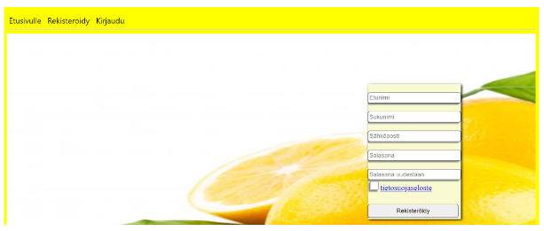
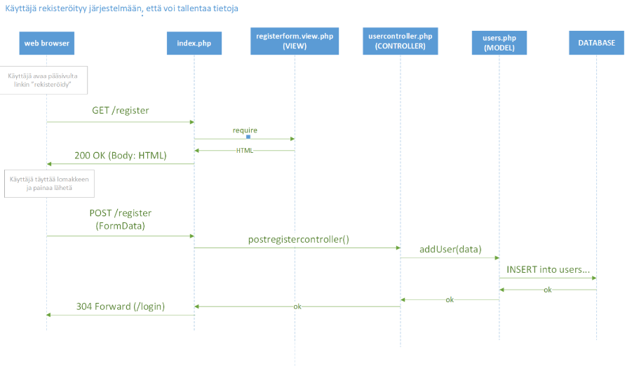

Koodidokumentti
Yleistä
Koodidokumentti kuvaa yhden user storyn toteutuksen. Projektin päätteeksi tehdään koodidokumentti jossa esitetään valitun itse toteutetun user storyn toiminta (frontend ja backend).
Esimerkki koodidokumentista: koodidokumentti.md
Kuvaus
Kuvaa user storyn toiminta. Liitä esimerkiksi projektiseinältä kuva tehtävästä tai kerro sanallisesti mitä toiminnallisuus mahdollistaa käyttäjälle.
Lisää kuva käyttöliittymästä.

Sekvenssikaavio
Laadi sekvenssikaavio jossa kuvaat user storyn toiminnan.

Arkkitehtuurikaavio
Laadi arkkitehtuurikaavio projektin koodista. Piirrä kuvaan päätaso sekä valitsemaasi user storyyn liittyvät komponentit.

Koodin kommentointi
Lisää englanniksi kommentit user storyyn liittyviin kooditiedostoihin. Voit tehdä oman branchin johon lisäät kommentoidut tiedostot, näiden ei tarvitse olla välttämättä main-haarassa.
Tiedoston alkuun kommenttilohko:
/**
* userManagement.php
* Controller for user functionalities
*/
Funktion alkuun kommenttilohko:
/**
* registerController()
* Handles registration. Forwards user
* to login-page or back to register-page
* in case of an error.
*/
Testaus
Liitä tähän user storyyn liittyvät systeemitestauksen testitapaukset MS Excel-taulukostanne mukaan dokumenttiin.
Itsearviointi
Kirjoita itsearviointi tutkinnon osan ammattitaitovaatimuksista. Mieti myös minkä arvosanan antaisit itsellesi tutkinnon osan kriteereihin perustuen.